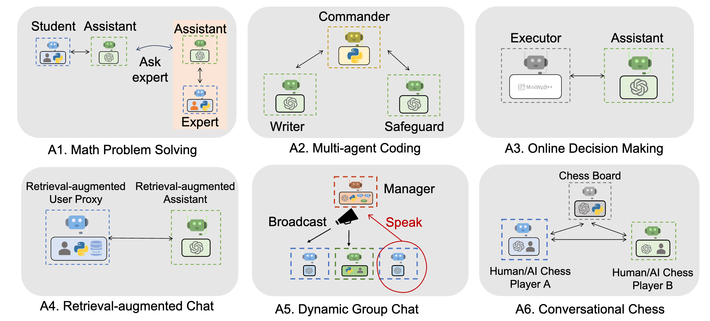

AutoGen#
AutoGen, developed by Microsoft in collaboration with Penn State University and University of Washington, is a framework designed for creating Large Language Model (LLM) applications through multi-agent conversations. It significantly simplifies the automation, orchestration, and optimization of complex LLM workflows, thus making the development of next-generation LLM applications more accessible. This framework provides a structured environment for agents to interact and solve tasks autonomously or with human intervention. The installation and utilization of AutoGen require a specific set of steps and understanding of its core components which include setting up a virtual environment, installing necessary dependencies, and executing multi-agent conversations. This tutorial aims to provide a comprehensive guide on setting up and using AutoGen for developing LLM applications.

Installation#
Setting Up a Virtual Environment: It’s advisable to create a virtual environment to keep AutoGen’s dependencies isolated. Two options are available:
venvandconda. Here are the commands for each:Using
venv:python3 -m venv pyautogen source pyautogen/bin/activate deactivate # to deactivate the environment
Using
conda:conda create -n pyautogen python=3.10 # python 3.10 is recommended conda activate pyautogen conda deactivate # to deactivate the environment
Python and AutoGen Installation: Ensure you have Python version >= 3.8. Install AutoGen using pip:
pip install pyautogen
Optional Dependencies: Install additional packages based on your requirements:
pip install docker # for seamless code execution pip install "pyautogen[blendsearch]" # for hyperparameter optimization pip install "pyautogen[retrievechat]" # for retrieval-augmented generation tasks pip install "pyautogen[mathchat]" # for math problem solving
Framework Overview#
AutoGen facilitates the development of applications where multiple agents interact to solve tasks. It supports diverse conversation patterns, enabling complex workflows with different levels of conversation autonomy, agent numbers, and conversation topology.
Executing Multi-Agent Conversations#
A simple example is provided in the official documentation where two agents, AssistantAgent and UserProxyAgent, are created to perform a task:
from autogen import AssistantAgent, UserProxyAgent, config_list_from_json
config_list = config_list_from_json(env_or_file="OAI_CONFIG_LIST")
assistant = AssistantAgent("assistant", llm_config={"config_list": config_list})
user_proxy = UserProxyAgent("user_proxy", code_execution_config={"work_dir": "coding"})
user_proxy.initiate_chat(assistant, message="Plot a chart of NVDA and TESLA stock price change YTD.")
This example showcases an automated chat between two agents to solve a specific task【14†source】.
Enhanced LLM Inferences#
AutoGen provides enhanced LLM inference capabilities such as tuning, caching, error handling, and templating. For instance, you can optimize generations by LLM with your own tuning data, success metrics, and budgets【14†source】.
AI Agents vs Standalone LLMs#
Large Language Models (LLMs) like GPT-4 are remarkable for their ability to generate human-like text based on the input they receive. They can answer queries, generate creative writing, or provide explanations among other things. However, their functionality stops at providing textual output; they do not interact with the outside world to perform tasks. For instance, GPT-4 can draft an email response but cannot send the email on your behalf.
On the other hand, LLM Agents, or AI Agents, extend the capabilities of LLMs by integrating them with tools that enable action in the external world. They are essentially LLMs endowed with the ability to interact with systems, applications, or even other AI agents to perform tasks autonomously or semi-autonomously. For example, Google’s Bard, as opposed to being a standalone LLM, is equipped with tools that allow it to send emails, thus turning it into an AI agent capable of executing actions based on the generated text.
The transformation from a standalone LLM to an AI Agent can be achieved through frameworks like AutoGen, which enables the development of LLM applications using multiple agents that can converse with each other to solve tasks. AutoGen agents are designed to be customizable, conversable, and seamlessly allow human participation, making them versatile in handling complex workflows, which may include actions like sending emails, among other things.
In the case of ChatGPT, while the standalone version can draft email responses, an AI agent version of ChatGPT, possibly enabled by plugins in ChatGPT Plus, could potentially send the email as well. The agent, powered by a framework like AutoGen, could interact with email services to send the drafted email on behalf of the user, illustrating the practical utility and the enhanced functionality that AI Agents offer over standalone LLMs.
This distinction underlines a pivotal advancement in the field of AI, moving from mere text generation to actionable insights and tasks, making AI a more productive and interactive tool in real-world applications.
Key Differentiators of LLM Agents**:#
The emergence of LLM Agents marks a significant stride towards more actionable and interactive AI, distinguishing itself from standalone Large Language Models (LLMs) in two primary aspects: Planning and Tools.
Planning: LLM Agents excel in mimicking a level of human cognitive functioning through two notable abilities:
Goal Decomposition: They are proficient in dissecting large and intricate tasks into smaller, more manageable steps. This ability is pivotal in handling complex tasks that require a structured approach to achieve the desired outcome.
Self-reflection & Refinement: These agents possess a self-reflective capacity allowing them to learn from past actions and mistakes. Through a continuous cycle of self-criticism and learning, they refine their actions to improve future outcomes. This iterative learning process significantly contributes to creating more accurate and task-oriented action plans.
Tools: Unlike standalone LLMs, LLM Agents have the privilege of accessing external APIs and executing code. This access enables them to:
Provide precise answers based on real-world data or computations, thus overcoming common LLM issues like knowledge cut-offs or math mistakes.
Reduce hallucinations, a common challenge where LLMs fabricate information.
The ability to interact with external tools creates a feedback loop, enhancing the accuracy and relevance of the responses generated by the agents. Through this iterative loop of planning and tool utilization, LLM Agents are often able to produce results that outshine the outputs from even the most potent standalone LLMs like GPT-4.
GPT-4 as a Common Powerhouse: It’s noteworthy that GPT-4 is frequently the underlying LLM powering these Agents, showcasing its versatility and robustness when augmented with planning capabilities and tool access.
Popular LLM-Agent-based Projects: The concept of LLM Agents has spurred intriguing projects that leverage this advanced AI architecture. Some notable projects include:
AutoGPT: Emerged with the advent of GPT-4 utilization via OpenAI API.
GPTEngineer: An agent adept in generating entire code bases for software projects.
HuggingGPT: A creative amalgamation of ChatGPT and Hugging Face technologies.
MetaGPT: A multi-agent framework enabling the creation of AI teams with varied roles like product managers, architects, or engineers. - ChatDev: Envisioned as a virtual software company operated through intelligent agents.
The integration of planning and tool access encapsulates the essence of LLM Agents, making them a formidable advancement in the realm of AI, often surpassing the capabilities of standalone LLMs. Through continuous self-reflection, goal decomposition, and external tool interaction, LLM Agents bring a higher level of autonomy and task-oriented action, marking a significant leap towards more practical and result-driven AI applications.
Distinctive Features of AutoGen#
AutoGen manifests a set of compelling features that differentiate it from other frameworks. The following are four noteworthy attributes that make AutoGen a remarkable platform for orchestrating AI agents in collaborative environments:
Complete Flexibility: AutoGen accords a high degree of flexibility in structuring conversations among agents. It allows you to customize:
The level of autonomy bestowed upon your agents.
The type of assistants required for your projects.
The size of your team orchestrating the workflow.
The interaction pattern among different agents.
This flexibility facilitates the creation of diverse AI teams tailored to the specific needs and complexities of your projects.
Human Participation: Unlike other AI agent-based projects like AutoGPT or GPT Engineer where user interaction is limited to initial instructions, AutoGen extends the interaction to feedback loops on partial results. Users can:
Correct,
Suggest improvements, or
Request additional features,
thereby enhancing the quality and relevance of the final outputs through iterative feedback and adjustments.
Multi-agent Conversations: The framework enables the orchestration of GroupChats, fostering a collaborative environment among multiple AI Agents. Each agent, potentially with a different specialization, collaborates, reflects, and collectively works towards solving the given task. This multi-agent dialogue and collaboration often lead to better and more comprehensive solutions.
Flexible Autonomy: The introduction of the UserProxyAgent is a significant feature of AutoGen. This AI assistant operates on behalf of humans, acting as a proxy. Users have the discretion to determine the “trust level” accorded to this AI partner, thereby establishing a balanced autonomy that aligns with the user’s comfort and project requirements.
AutoGen’s design encapsulates a balanced blend of autonomy, human interaction, and collaborative AI, paving the way for more intricate and result-oriented AI-driven projects. Through these features, AutoGen emerges as a flexible and interactive platform, promoting enhanced outcomes through human-AI and AI-AI collaborations.
Illustrative Examples of AutoGen Functionality#
AutoGen, with its versatile capabilities, has been employed in diverse scenarios to facilitate multi-agent interaction, code generation, and human-AI collaboration. Below are categories of examples showcasing AutoGen’s efficacy in orchestrating complex workflows:
{kind=link}
Code Generation, Execution, and Debugging: AutoGen streamlines the process of code generation and debugging through automated chats among agents. Here are some examples:
Automated Task Solving with Code Generation, Execution & Debugging.
Auto Code Generation, Execution, Debugging and Human Feedback.
Automated Code Generation and Question Answering with Retrieval Augmented Agents.
Multi-Agent Collaboration ( > 3 Agents): Engaging multiple agents in a collaborative environment elevates the problem-solving capability. These examples depict such collaborative efforts:
Automated Task Solving with GPT-4 + Multiple Human Users.
Automated Task Solving by Group Chat (with 3 group member agents and 1 manager agent).
Automated Data Visualization by Group Chat (with 3 group member agents and 1 manager agent).
Applications: Beyond code generation and multi-agent interaction, AutoGen finds applicability in various domains as shown below:
Automated Chess Game Playing & Chitchatting by GPT-4 Agents.
Automated Continual Learning from New Data.
OptiGuide - Large Language Models for Supply Chain Optimization.
Tool Use: AutoGen facilitates the use of external tools to enhance the problem-solving capabilities of AI agents. Examples include:
Web Search: Solve Tasks Requiring Web Info.
Use Provided Tools as Functions.
Task Solving with Langchain Provided Tools as Functions.
Agent Teaching and Learning: AutoGen supports the training and education of agents to acquire new skills and knowledge, demonstrated in the following examples:
Teach Agents New Skills & Reuse via Automated Chat.
Teach Agents New Facts, User Preferences and Skills Beyond Coding.
These examples underscore AutoGen’s breadth in facilitating complex, multi-agent interactions and its adaptability in handling varied tasks and workflows, which can be explored in greater detail through the provided notebooks.